五子剑系列讲座之八【五子棋中级云雨月】
#1 五子剑系列讲座之八【五子棋中级云雨月】 作者：有志青年 发表时间：2007-12-23 8:40:18
注：五子剑五子棋系列讲座教程出自掌棋盟论坛，版权归原作者本人及掌棋盟论坛所有，未经许可，请勿私自转载。爱五子棋网站已获授权。
下棋这几年，飘飘零零的真正踏实在下棋的时间并不多，利用空闲的几天写下个人的一些经
验，希望可以对棋友有所帮助！
我认为下棋最重要的是态度和方法，你对五子棋的热爱程度以及学棋时所用的方法是提高
的关键！
阅读的顺序为：
五子棋初级→五子棋初级花月→五子棋初级蒲月→五子棋初级习题→
五子棋中级→五子棋中级云雨月→五子棋中级寒星→五子棋中级银月→五子棋中级习题→
五子棋ＶＣＦ习题集→五子棋高级
所有截图画面是ＬＩＢ、五子妙手３.０、ＱＱ游戏五子棋单机版能有如此多的人爱好
五子棋是最令人高兴的事，如此多的人为了同一种游戏来交流甚至痴迷！
感谢所有下五子棋的朋友，祝大家笑口常开、一生平安！
棋友：五子剑
#2 Re:五子剑系列讲座之八【五子棋中级云雨月】 作者：有志青年 发表时间：2007-12-23 8:41:34
现在一起来看一些优势开局的变化，每个开局都有自身的知识，下面我会尽可能找出这些开局的一些知识点来，重点在于学习棋型和掌握下棋的思路！云月和雨月是相通的，这里开的都是云月！如下图：
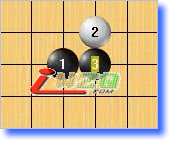
#3 Re:五子剑系列讲座之八【五子棋中级云雨月】 作者：有志青年 发表时间：2007-12-23 8:46:01
现在我们来看具体的变化，如下图：
4手形成一个同黑并列的二，然而黑先手，这里黑容易扩展优势！
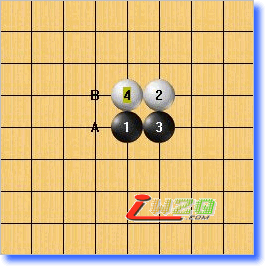
A,B为两打！请注意5手的方向！这个图形猛一看好像是完全对称的，其实不然！左边的空间是要比右边的大一格的！细节决定成败！很多时候可能就是一个小小的细节导致结果发生翻天覆地的变化！
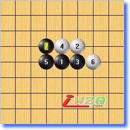
6手右挡形成一个二，7手做棋自然，这个在初级已经学习过了！
6手左挡，增加了左边的防守力量，黑7手好棋，连接左右的线路并在下面形成优势！
这三个子的形状与蒲月最强防守的打点图形是一样的！这个形状进攻非常好！百无论怎样防守黑都可轻松走出大优的局面。
#4 Re:五子剑系列讲座之八【五子棋中级云雨月】 作者：有志青年 发表时间：2007-12-23 8:51:32
下面换个４手来看，如下图：
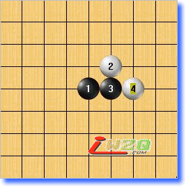
这个4手常见，比较容易走出来！
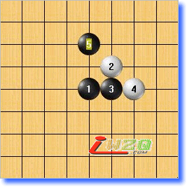
5手防守同时形成新的活二，同时形成一个很好的棋型！
这个6手是个巧妙的防守，表面上看好像没有理会黑的二自己顾自己，给了黑机会！
可以看到，6手很巧妙的使黑9在下方活三，尽管黑现在下在A的位置优势依然非常大，但这种白的下其手法是相当好的！
手好棋！理睬白的二，因为白后面的进攻路线肯定会被黑H9反先，利用这个牵制，黑棋继续做棋扩大优势！
白8继续对攻，9手活三后11手关键！黑棋要想把优势连接起来，就必须找到一个连接的关键点，同时还要考虑白的反击，这里将白的进攻完全牵制！好棋！
#5 Re:五子剑系列讲座之八【五子棋中级云雨月】 作者：有志青年 发表时间：2007-12-23 8:57:34
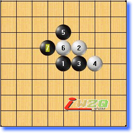
6手断开黑的二，切断黑主要的连接，最强防守！7手防守时继续成双二，这个棋型非常好！
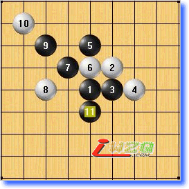
8手防守在要点，10手自然，11手关键！！这是一个非常好的棋型！黑将全盘的点线连接了起来！
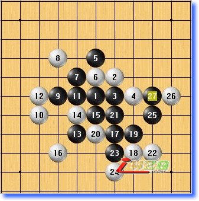
8手防上面，黑在下面连续进攻胜！
8手选择防守线路，也是强防的点！破坏了8线的眠三线和G线的连接！黑在15手跳眠三做棋扩大优势！
#6 Re:五子剑系列讲座之八【五子棋中级云雨月】 作者：有志青年 发表时间：2007-12-23 9:00:19
下面再换个４手来看，如下图：
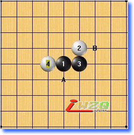
4手选择在左边防守黑的二，黑两打在A,B点，A点成角，B点则是直接在右边发展力量！
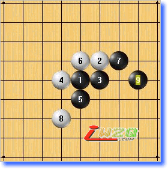
先来看看这个5手！6手成双二，7手黑活三防守的同时扩展优势，8手下防后右边空了，黑9手好棋！将4，6的二完全牵制！稳握先手！
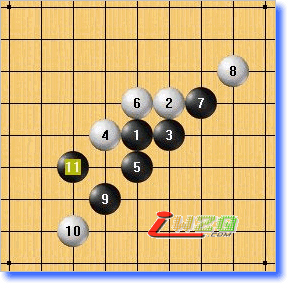
8手上防，则黑在下面建立优势！
#7 Re:五子剑系列讲座之八【五子棋中级云雨月】 作者：有志青年 发表时间：2007-12-23 9:02:50
下面我们换个６手看看，如下图：
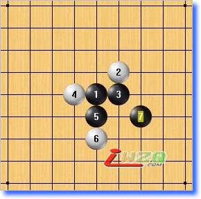
6手继续选择马步防守，7手黑迅速占领白局部最后一个八卦点！
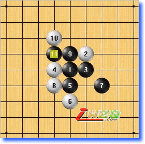
这个8手非常强！黑无论如何进攻，白都可以很坚强的防守住！所以黑9手活三，10手反三后黑直接挡中间，而保留3，5的变化，如此扩大局面的优势以取得胜利！
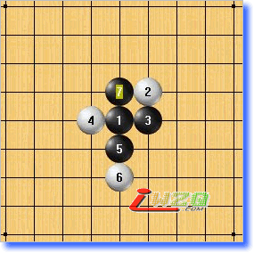
7手在这里做棋也是一种很好的手段！看似白可以完成A八卦点的布局，然而……
9手好棋！9手向外做一手跳眠三，利用上面的空间，在外围建立了极大的优势
#8 Re:五子剑系列讲座之八【五子棋中级云雨月】 作者：有志青年 发表时间：2007-12-23 9:05:48
现在看看另一个五手打点，如下图：
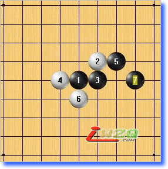
6手防左边，7手顺利的在右边形成必胜棋型！
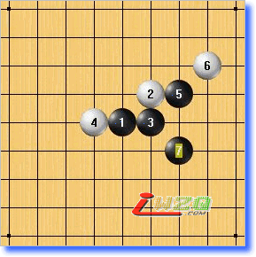
6手上防，7手做二拓展棋型！
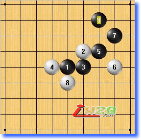
6手占黑做棋点，压制黑右边空间！7手先向上活三占便宜！白若想现在下防后黑在上面成必胜型！
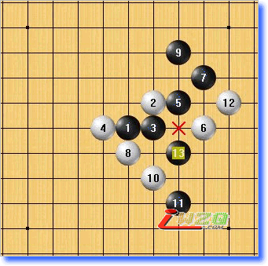
白的进攻被牵制！
8手上防，则黑多了一个7的点，可以在10线上增加进攻力量，同时下面还可以做杀！
#9 Re:五子剑系列讲座之八【五子棋中级云雨月】 作者：有志青年 发表时间：2007-12-23 9:07:56
现在我们再换个４手来看看，如下图：
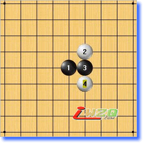
4手走黑对面，这个4手弱，黑简单胜！
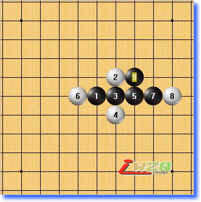
胜型!
5手也可直接成角！
#10 Re:五子剑系列讲座之八【五子棋中级云雨月】 作者：有志青年 发表时间：2007-12-23 9:10:04
现在看看云月的最强防守，如下图：
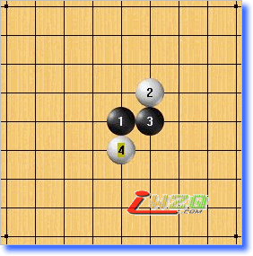
4手马步，是这里的最强防守！
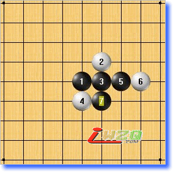
这个5手通常出现在刚玩五子棋的爱好者。6手我们都喜欢走八卦，事实上这里黑已经可以杀掉了！
6手应该左防，这时黑是杀不出的！
#11 Re:五子剑系列讲座之八【五子棋中级云雨月】 作者：有志青年 发表时间：2007-12-23 9:20:58
现在看看正确的打点，如下图：
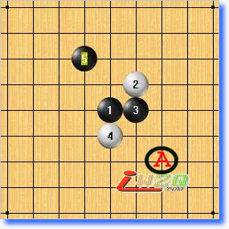
5手下白的八卦点是这里进攻最强的点！同时请注意这里和A点的区别！这个前面已经提到过！
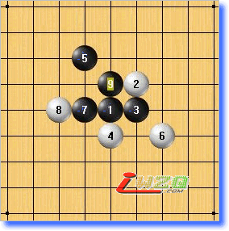
6手形成活二，黑7手活三后9手占要点做棋！完全牵制4，6的二！
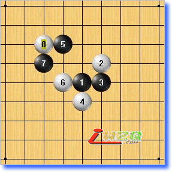
6手踏实防守，7手若直接防守做棋，则白8手占黑做棋要点，被压制！
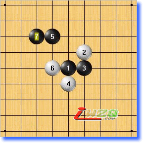
7手好棋！先占要点，同时牵制白的二，白无论怎么活三，黑防守后都是大优局面！
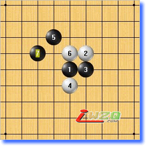
6手切断黑连接，7手好棋！拓展外围优势！
6手上防，7手直接下面做眠三，很好的做棋手段！云月中的棋型都非常好，值得认真学习！
#12 Re:五子剑系列讲座之八【五子棋中级云雨月】 作者：墨客来了 发表时间：2009-12-7 18:11:09
看了，很有帮助#13 Re:五子剑系列讲座之八【五子棋中级云雨月】 作者：董明 发表时间：2011-6-22 16:15:38
好，学习了，辛苦了各位老师
#14 Re:五子剑系列讲座之八【五子棋中级云雨月】 作者：自来水 发表时间：2011-6-22 17:19:20
 这种年代久远的帖子可以看看就完了，也可以送个花什么的
这种年代久远的帖子可以看看就完了，也可以送个花什么的
不用挖出来集体围观